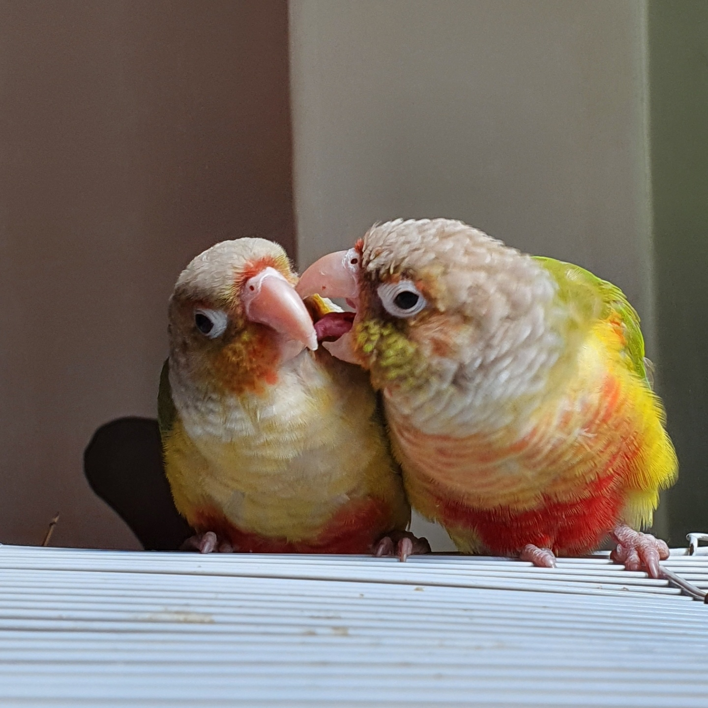

포브스 선정 세상에서 제일 말안듣는 앵무새 두 마리
천둥이
태풍이
천둥이와 태풍
천둥이와 태풍

둘 중 추정하기에 천둥이는 암컷, 태풍이는 수컷이라 추정된다. 본 앵무들의 성별을 정확히 알기 위해서는 유전자 검사가 필요하지만,
대체로 수컷이 더 예쁘게 생겼다는 점에서 볼품없게 생긴 천둥이는 암컷임이 틀림없다. 서로를 매우 끔찍이 아끼는 편인데, 먹을 것만 보이면
천둥이는 태풍이 것도 뺏어먹는다. 대체로 화가 난 태풍이가 먹이를 되찾기 위해 발길질을 하며 둘의 싸움이 시작된다.